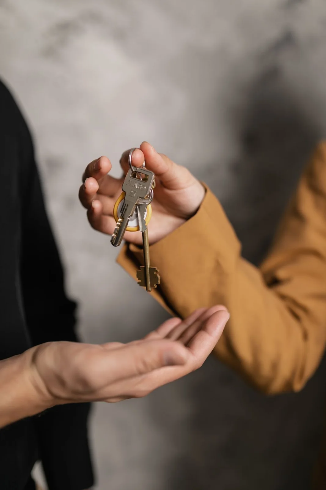
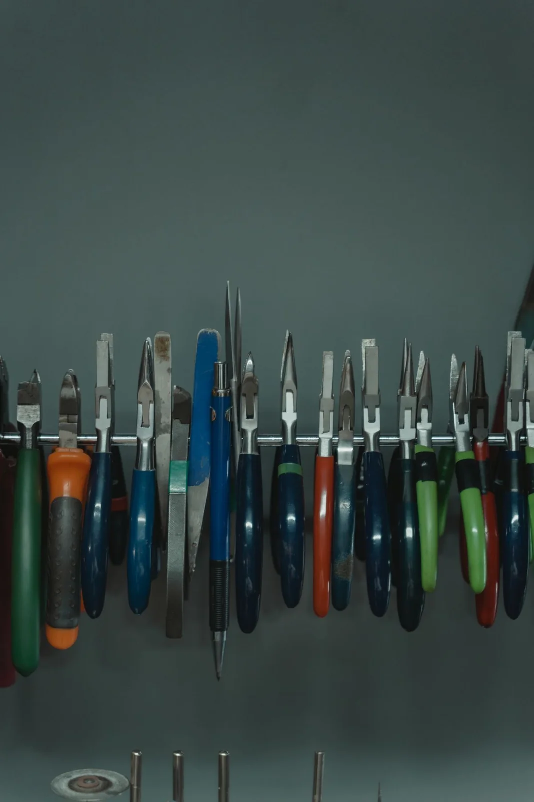

Abertura de portas
Porta com chave, fechadura quebrada ou chave perdida dentro. A viabilidade depende do tipo de fechadura e do local.
Resposta rápida · orçamento no WhatsApp
Chaveiro Express é um modelo de site para chaveiros e equipes de abertura de portas. O visitante escolhe o serviço, descreve a situação e conversa direto com você pelo WhatsApp.


Cada serviço tem valor e prazo combinados antes do atendimento. O site não cobra, não agenda sozinho e não promete preço fechado.
Porta com chave, fechadura quebrada ou chave perdida dentro. A viabilidade depende do tipo de fechadura e do local.
Substituição por modelo mais seguro, com explicação das diferenças entre fechadura de pino, cilindro e trava.
Cópia de chaves de casa, apartamento, armário e de fechaduras comuns. Modelos com chave controladora exigem o original ou o código.
Chave-presença e programações simples, conforme o modelo do carro. Veículos com chave eletrônica dependem de concessionária ou equipamento compatível.
Catálogo demonstrativo local. Valores e prazos são combinados pelo WhatsApp.
Quatro passos simples. Nenhum cadastro, nenhuma cobrança automática e você decide quando e como responder.
Tipo de porta, problema e bairro. Se puder, envie uma foto pelo WhatsApp.
A mensagem chega direto no atendimento. Ela não é gravada nem enviada sozinha pelo site.
Você informa o valor, o prazo e a forma de pagamento antes de qualquer serviço.
Serviço executado e conferido com você. Garantia e escopo são definidos na conversa.
Esta é uma demonstração com bairros fictícios. No site real, informe apenas as regiões onde você realmente atende, para não gerar deslocamento desnecessário.
9 fotografias
Fotografias de banco selecionadas pelo assunto. Não são um portfólio de clientes nem comparativos de serviço.
Preencha o formulário e a mensagem fica pronta para o WhatsApp. Você confere antes de enviar: o site não manda nada sozinho, não salva seus dados e não registra pagamento.
Esta é uma demonstração criada pela MOSS Digital. O WhatsApp desta cópia atende a MOSS para falar sobre este modelo de site — não é um chaveiro em funcionamento.
Não sempre. Há fechaduras que exigem técnica e ferramentas específicas. Em alguns casos o caminho é danificar a fechadura ou a porta, e isso precisa ser combinado com você antes.
Este modelo não publica tabela de preços. O valor depende do tipo de fechadura, do horário, da distância e de eventual material. Combine tudo antes do atendimento.
Isso depende da configuração do negócio e da cidade. O serviço e a documentação fiscal aplicável precisam ser definidos antes de prometer qualquer emissão.
Não. Chaveiro Express é uma marca fictícia para demonstrar este site. As fotos são de banco e ilustram chaves, fechaduras e ferramentas. Em um projeto real, podem ser substituídas por fotos autorizadas do serviço.
A vitrine e a mensagem do WhatsApp funcionam sem banco. A integração opcional com Supabase carrega os serviços publicados e oferece um painel autenticado para o responsável registrar os chamados recebidos pelo WhatsApp. A instalação está explicada no manual.
Não. O site não processa pagamento, não guarda dados de cartão e não confirma contratação. O valor, o prazo e a forma de pagamento são combinados na conversa.